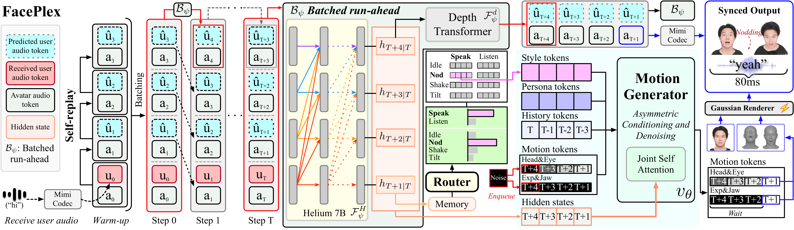

Natural human conversation is inherently a real-time interaction in which speech and facial behavior continuously evolve. Enabling such interaction requires a conversational avatar to jointly generate speech and facial motion in real time, prepare facial motion for upcoming speech before the corresponding audio is emitted, and produce non-verbal reactions that reflect the ongoing dialogue. However, existing conversational avatar systems cannot address such requirements: audio-driven methods rely on pre-given speech, while joint streaming generation alone does not ensure anticipatory articulation or semantically appropriate reactions.
We propose FacePlex, a unified framework for full-duplex speech–facial motion generation and real-time avatar rendering. FacePlex jointly coordinates speech, facial motion, and Gaussian splatting rendering on a shared streaming timeline. To prepare facial motion for upcoming speech, FacePlex predicts a short speech continuation and uses its future hidden states through asymmetric conditioning and denoising, while continuously updating them as new user audio arrives without observing future user input. For dialogue-grounded non-verbal behavior, we construct SemReact, a dataset aligning dialogue context, reaction semantics, and facial motion, and introduce a semantic behavior router that guides continuous motion during both speaking and listening.
Extensive experiments show improved audio-visual synchronization and facial articulation, natural dialogue-grounded non-verbal responses, and low-latency of 122 ms end-to-end avatar interaction.

Overview of FacePlex. Sequential self-replay generates future speech; batched run-ahead ℬψ then refreshes the hidden states as new user audio arrives. A semantic behavior router with style token routing selects context-dependent non-verbal behavior. At step T, FacePlex prepares speech and facial motion for step T+1, with facial motion rendered using Gaussian splatting.
Main comparison on Seamless-Interaction between offline audio-driven facial motion baselines (ARTalk, DualTalk, UniLS, Moshi-Face) and full-duplex streaming FacePlex. FacePlex responds with sub-second latency while achieving the best facial motion quality in both speaking and listening intervals.
| Method | Streaming | Speaking | Listening | |||
|---|---|---|---|---|---|---|
| Latency (s) ↓ | S-LVE ↓ | S-MHD ↓ | S-FDD ↓ | L-FDD ↓ | L-FID ↓ | |
| ARTalk | 4.043 | 8.385±2.958 | 1.906±0.607 | 46.878±19.869 | 45.006±20.567 | 8.811 |
| DualTalk | 11.174 | 11.785±2.171 | 2.389±0.382 | 35.836±16.725 | 33.276±17.438 | 56.376 |
| UniLS | 4.093 | 7.691±2.326 | 1.819±0.497 | 23.451±12.917 | 30.215±16.808 | 3.454 |
| Moshi-Face | 4.188 | 10.605±2.697 | 2.457±0.586 | 39.307±21.268 | 35.595±20.718 | 1.924 |
| FacePlex Ours | 0.122 | 7.162±1.857 | 1.674±0.418 | 22.839±13.109 | 26.623±15.431 | 1.407 |
Main comparison. Offline baselines and full-duplex streaming FacePlex on Seamless-Interaction. Bold marks the best result; values after ± are standard deviations. S/L denote speaking and listening intervals; latency is in seconds. LVE, MHD, FDD, and FID are Lip Vertex Error, Mean Head Distance, Upper-Face Dynamics Deviation, and Fréchet Inception Distance, respectively.
To complement objective metrics with human perception, we conducted a user study with 31 participants comparing FacePlex against ARTalk, DualTalk, UniLS, and Moshi-Face. Each participant evaluated 5 conversation sessions, where each session contained 5 videos generated from the same input by different models. Participants rated each video on a 1–5 scale for Lip-Sync (Sync), Naturalness (Nat.), Non-verbal Responsiveness (NVR), and Overall (MOS). The table below summarizes the perceptual comparison.
| Method | Sync ↑ | Nat. ↑ | NVR ↑ | MOS ↑ |
|---|---|---|---|---|
| ARTalk | 2.445 | 2.161 | 1.729 | 2.148 |
| DualTalk | 3.161 | 2.665 | 2.748 | 2.948 |
| UniLS | 2.594 | 2.510 | 2.600 | 2.626 |
| Moshi-Face | 1.561 | 1.781 | 2.052 | 1.774 |
| FacePlex Ours | 3.368 | 3.006 | 3.303 | 3.303 |
User study results. Mean rater score on a 1–5 scale (higher is better) for Lip-Sync (Sync), Naturalness (Nat.), Non-verbal Responsiveness (NVR), and Overall (MOS). Bold = best; FacePlex wins every axis, with the largest margin on Non-verbal Responsiveness.
Full conversational sessions rendered side-by-side: ARTalk | DualTalk | UniLS | Moshi-Face | FacePlex (Ours). All methods are driven by the same dialogue audio; the partner's speech is on the left channel and the avatar's speech on the right. Please unmute to listen.
Session 1
Session 2
Session 3
Session 4
Session 5
Session 6
Short excerpts while the avatar listens and the partner speaks (ARTalk | DualTalk | UniLS | Moshi-Face | FacePlex). FacePlex responds with semantic head gestures such as nods, while audio-driven baselines largely remain still.
Example 1
Example 2
Example 3
Example dialogues from SemReact. Both speakers' ground-truth motion is shown side-by-side (left: user / partner, right: agent / avatar), with the dialogue audio in stereo. The caption at the bottom of each panel marks the annotated semantic gesture (nod, shake, tilt).
Dialogue 1
Dialogue 2
Dialogue 3
Neural avatar renderers are not free inside a streaming loop: rendered naively, the two frames of each FacePlex step take about 17% of the latency budget. Profiling shows most of this avoidable cost comes from how the renderer runs on the GPU, not from its architecture: many small kernel launches around the attention layers, plus frame-invariant computation repeated at every step. We therefore reorganize execution while keeping the original model computation unchanged:
Rendering latency drops from 13.24 ms to 4.06 ms per FacePlex step (3.26×), with negligible perceptual deviation from the original renderer (LPIPS 1.04×10−5).
Nod
Shake
Tilt
Four user-study sessions, each rendered with a different identity from a single reference image (left). Please unmute to listen to the dialogue.
Example 1
Example 2
Example 3
Example 4
@article{lim2026faceplex,
title = {FacePlex: Toward Natural Full-Duplex Conversational Avatars},
author = {Lim, Habin and Lew, Hah Min and Lee, Jae-Ho and Kim, Min-Jae and Lee, Seungeun and Kang, Ji-Su and Park, Gyeong-Moon},
journal = {arXiv e-prints},
pages = {arXiv--2606},
year = {2026}
}